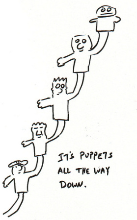

People often ask how to do iteration in Puppet. Most Puppet users have a background in imperative programming, and are already very familiar with for loops. Puppet is sometimes confusing at first, because it is actually (or technically, contains) a declarative, domain-specific language. In general, DSL’s aren’t always Turing complete, nor do they need to support loops, but this doesn’t mean you can’t iterate.
Until recently, Puppet didn’t have an explicit looping construct, and it is quite possible to build complex modules without using this new construct. There are even some who believe that the language shouldn’t even contain this feature. I’ll abstain from that debate for now, but instead, I would like to show you some iteration techniques that you can use to get your desired result.
Recursion
|  |
Many people forget that recursion is a form of iteration. Even more don’t realize that you can do recursion in Puppet:
#!/usr/bin/puppet apply
define recursion(
$count
) {
# do something here...
notify { "count-${count}":
}
$minus1 = inline_template('<%= count.to_i - 1 %>')
if "${minus1}" == '0' {
notify { 'done counting!':
}
} else {
# recurse
recursion { "count-${minus1}":
count => $minus1,
}
}
}
# kick it off...
recursion { 'start':
count => 4,
}Type iteration
We’re used to seeing simple type declarations such as:
user { 'james':
ensure => present,
comment => 'james is awesome!',
}$users = ['kermit', 'beaker', 'statler', 'waldorf', 'tom']
user { $users:
ensure => present,
comment => 'who gave these muppets user accounts?',
}Which will cause Puppet to effectively iterate across the elements in $users. This is the most important type of iteration in Puppet. Please get familiar with it.
This technique can be used with any type. It can even be used to express a many-to-one dependency relationship:
# where $bricks is a list of gluster::brick names
Gluster::Brick[$bricks] -> Gluster::Volume[$name] # volume requires bricksdefine some_module::process_array(
$foo,
$array # pass in the original $name
) {
#notice(inline_template('NAME: <%= name.inspect %>'))
# do something here...
# build a unique name...
$length = inline_template('<%= array.length %>')
$ulength = inline_template('<%= array.uniq.length %>')
if ( "${length}" != '0' ) and ( "${length}" != "${ulength}" ) {
fail('Array must not have duplicates.')
}
# if array had duplicates, this wouldn't be a unique index
$index = inline_template('<%= array.index(name) %>')
# iterate, knowing your index
some::type { "${foo}:${index}":
foo => 'hello',
index => "${index}",
}
}
# a list
$some_array = ['a', 'b', 'c'] # must not have duplicates
# using the type requires that you pass in $some_array twice!
some_module::process_array { $some_array: # array
foo => 'bar',
array => $some_array, # same array as above
}create_resources
This is a similar technique for when you want to specify different arguments for each type:
$defaults = {
ensure => present,
comment => 'a muppet',
}
$data = {
'kermit' => {
comment => 'the frog',
},
'beaker' => {
comment => 'keep him away from your glassware',
},
'fozzie' => {
home => '/home/fozzie',
},
'tom' => {
comment => 'the swedish chef',
}
}
create_resources('user', $data, $defaults)Template iteration
You might want to iterate to perform a simple computation, or to modify an array in some way. For static value computations, you can often use a template. Remember that the template will get executed at compile time on the Puppet Master, so code accordingly. Here are a few contrived examples:
# filter out all the integers less than zero
$array_in = [-4,3,-8,-2,1,4,-2,1,5,-1,-7,9,-3,2,6,-8,5,3,5,-6,8,9,7,-5,9,3,-3]
$array_out = split(inline_template('<%= array_in.delete_if {|x| x < 0 }.join(",") %>'), ',')
notice($array_out)# build out a greeting string
$names = ['animal', 'gonzo', 'rowlf']
# NOTE: you can also use a regular multi-line template for readability
$message = inline_template('<% if names == [] %>Hello... Anyone there?<% else %><%= names.map {|x| "Hello "+x.capitalize}.join(", ") %>.<% end %>')
notice($message)Advanced template iteration
When you really need to get fancy, it’s often time to call in a custom function. Custom functions require that you split them off into separate files, and away from the module logic, instead of keeping the functions inline and accessible as lambdas. The downside to using these “inline_template” lambdas instead, is that they can quickly turn into parlous one-liners.
# transform the $data hash
$data = {
'waldorf' => {
'heckles' => 'absolutely',
'comment' => 'a critic',
},
'statler' => {
'heckles' => 'all the time',
'comment' => 'another critic!',
},
}
# rename and filter on the 'heckles' key
$yaml = inline_template('<%= data.inject({}) {|h, (x,y)| h[x] = {"applauds" => y.fetch("heckles", "yes")}; h}.to_yaml %>')
$output = parseyaml($yaml) # parseyaml is in the puppetlabs-stdlib
notice($output)Some reminders
If you properly understand the functionality that your module is trying to model/manage, you can usually break it up into separate classes and defined types, such that re-use via type iteration can fulfill your needs. Usually you’ll end up with a more properly designed module.
Test using the same version of Ruby that will run your module. Newer versions of Ruby have some incompatible changes, and new features, with respect to older versions of Ruby.
Remember that templates and functions run on the Puppet Master, but facts and types run on the client (agent).
The Puppet language is mostly declarative. Because this might be an unfamiliar paradigm, try not to look for all the imperative features that you’re used to. Having a programming background can help, because there’s certainly programming mixed in, whether you’re writing custom functions, or erb templates.
Future parser
For completeness, I should mention that the future parser now supports native iteration. If you need it, it probably means that you’re writing a fairly advanced module, and you’re comfortable manual diving. If you have a legitimate use case that isn’t possible with the existing constructs, and isn’t only a readability improvement, please let me know.
Conclusion
I hope you enjoyed this article. The next time someone asks you how to iterate in Puppet, feel free to link them this way.
Happy hacking,
James
You can hire James and his team at m9rx corporation.
You can follow James on Mastodon for more frequent updates and other random thoughts.
You can follow James on Twitter for more frequent updates and other random thoughts.
You can support James on GitHub if you'd like to help sustain this kind of content.
You can support James on Patreon if you'd like to help sustain this kind of content.
Your comment has been submitted and will be published if it gets approved.
Click here to see the patch you generated.
{kind=link}
Comments
Nothing yet.
Post a comment